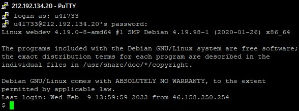
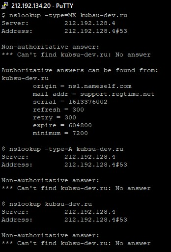

Программа putty
Авторизация
показывает WHOIS о домене
показывает пинг до хоста
Команда nslookup — инструмент сетевого администрирования для запросов в доменной системе имен (DNS) с целью получения доменного имени, IP-адреса или другой информации из записей DNS.
nslookup -type=A, где A = адресная запись
nslookup -type=MX, где MX = почтовый шлюз + приоритет
nslookup -type=NS, где NS = адрес узла доменной зоны
nslookup -type=SOA, где SOA = авторитетность информации
показывает на каких DNS находится домен
git clone putty
FileZilla